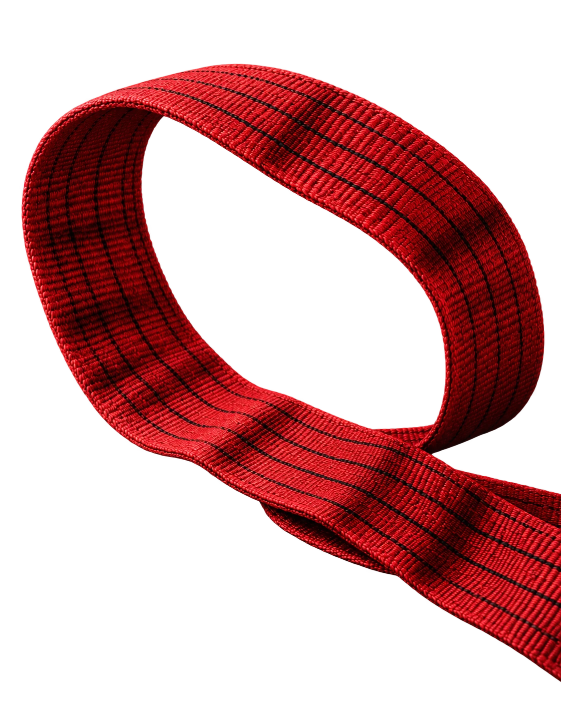

↗
↗Sollevamento tessile
SOLLEVAMENTO & ANCORAGGIO
Fasce, funi e componenti per il tuo lavoro.
Il prodotto giusto, in ogni dettaglio.

DAL MATERIALE AL SISTEMA
Una trama, una giunzione, una configurazione. Ogni scelta contribuisce al sistema completo. Esplora i materiali e consulta i dati prima di definire la tua richiesta.
IL CATALOGO Marmi360
Dal tessile all’acciaio, una gamma da esplorare per famiglia, materiale e configurazione.
Tutti i 103 prodotti103 prodotti · Cerca per nome, codice o materiale.
IL NOSTRO APPROCCIO
Il carico è solo il punto di partenza. Contano anche l’ambiente di lavoro, i punti di presa, gli ingombri e la frequenza d’uso.
Capire l’applicazioneCarico, geometria e condizioni operative.
Definire la configurazioneMateriale, lunghezza e accessori necessari.
Consultare la documentazioneDati e tabelle del prodotto selezionato.
TESSILE / ACCIAIO / PRECISIONE
Materiali diversi.
Un’unica attenzione.
DATI E DOCUMENTI
Foto, caratteristiche, varianti e tavole originali accompagnano le schede. Per valutare il prodotto con i dati davanti.
Consulta le schedeLe tabelle riportano i dati del catalogo di riferimento. Portate, misure e idoneità d’impiego richiedono la documentazione del prodotto fornito.
DALLA SCELTA ALLA RICHIESTA
Raccogli i prodotti che ti interessano e aggiungi le informazioni del tuo progetto in un’unica richiesta.
Cerca per nome o codice, filtra la famiglia e consulta la scheda.
Aggiungi i prodotti, scegli le varianti e indica quantità e necessità.
Rivedi il riepilogo, copialo oppure scaricalo per condividerlo.
IL PROSSIMO PASSO
Indica cosa ti serve. Puoi iniziare dai prodotti selezionati oppure descrivere direttamente l’applicazione.